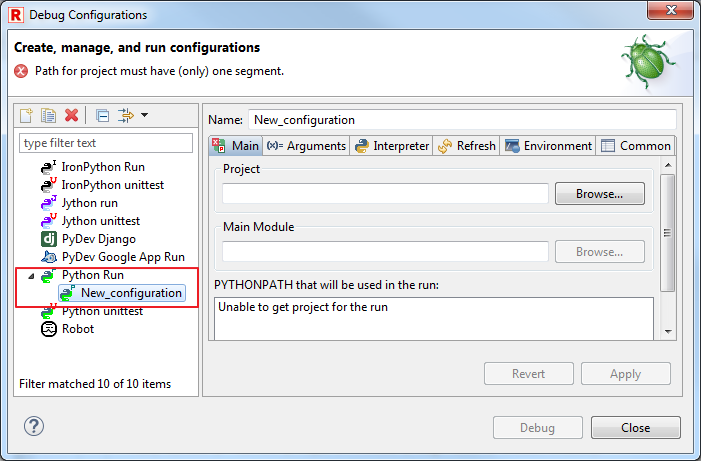
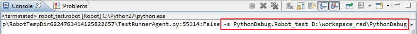
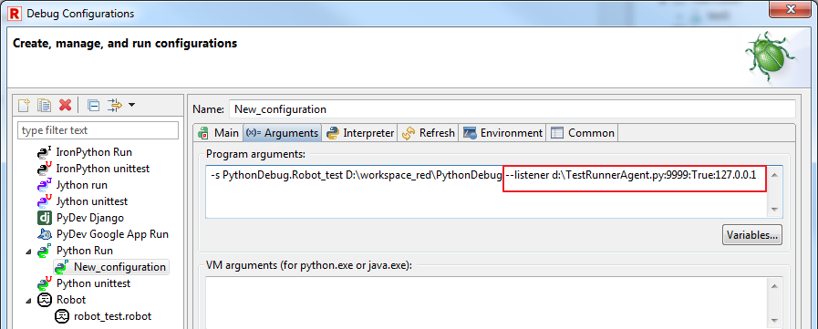
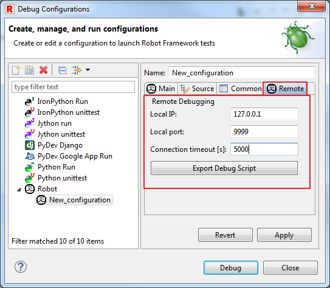

Debug Robot&Python scripts
This article provides tutorial how to setup debugging of Python scripts while running Robot testcases.
For basic Robot testcase/keyword debugging, please refer to Debug topic in Help.
Requirements
Installed PyDev with RED - Robot Editor.
This is necessary to be able to run and debug Python scripts within Eclipse.
Debug Python scripts while running Robot testcase
In general, to allow debugging Python scripts while running Robot testcases, you need to setup Python debug execution in such way that Python interpreter will execute Robot runner with suite with enabled Python debugger.
This will trigger any Python script's break point during Robot runtime.
Instructions:
- Include project path in PYTHONPATH environment variable
This can be done by editing variable on OS level or using PyDev Preferences:
Windows -> Preferences -> PyDev -> Interpreters -> Python under Libraries
- Open Debug Configurations:

- Edit or create new Python Run configuration:

- Provide Project to be debugged,together with path to Robot runner run.py:

- In Arguments tab, provide arguments passed to run.py for Robot execution.
This is the list of testcases/whole project to be included during Debug

If you are uncertain what should be included, try to run Robot testcase and check console:

- Apply and Close/Debug
Running such Debug configuration will start Python debugger.
Remember to place at least one breakpoint inside Python script.
Simultaneously debug Python scripts and Robot testcases
This is combination of running Python Debug with Remote Debug of Robot testcases.
In essence, there needs to be two RED/Eclipse instances - one instance is running Python Debug with modification which allows to connect RED as Remote Debug.
This way in one instance(in this case it does not need to be Eclipse, any Python env with proper debug&Robot remote arguments) Python debug can be provided, remote RED instance is providing Robot debug functionalities.
Using 2 Eclipse instances:
Eclipse with Python Debug
- Open Debug Configuration
- Cerate or edit any of Robot Debug Configuration to export TestRunner.py script
TestRunner.py is a script to allow remote RED instance to connect to running Robot.

- Edit Python Debug Configuration,in Arguments include remote listener
Remote listener allows to connect RED instance to running Robot execution which will be provided on this Eclipse instance:
--listener <PATH_TO_TESTRUNNER.PY>:<LOCAL_PORT>:TRUE:<LOCAL_IP>

- Apply&Close
RED/Eclipse with Robot Debug
- Create/open different Workspace than in first Eclipse
- Import Project for Debug
Right click on Workspace -> Import -> General -> Existing Projects into Workspace

Remember to select "Copy projects into workspace"

- Edit Debug Configuration for Robot
In Main tab provide imported Project and testsuites:

- Configure Remote tab with LOCAL_IP and LOCAL_PORT from former Eclipse

Running Python&Robot debug
Start debug of Python Debug instance first than start debug of Robot Debug instance.